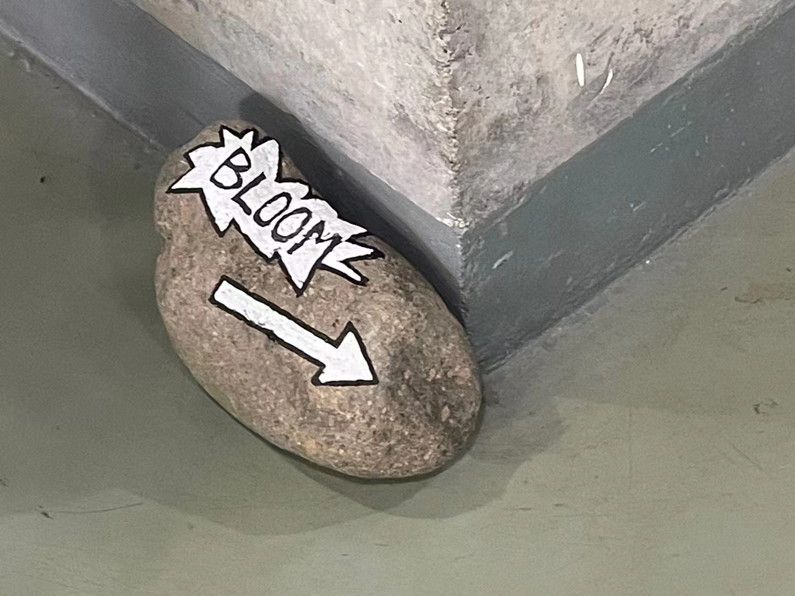
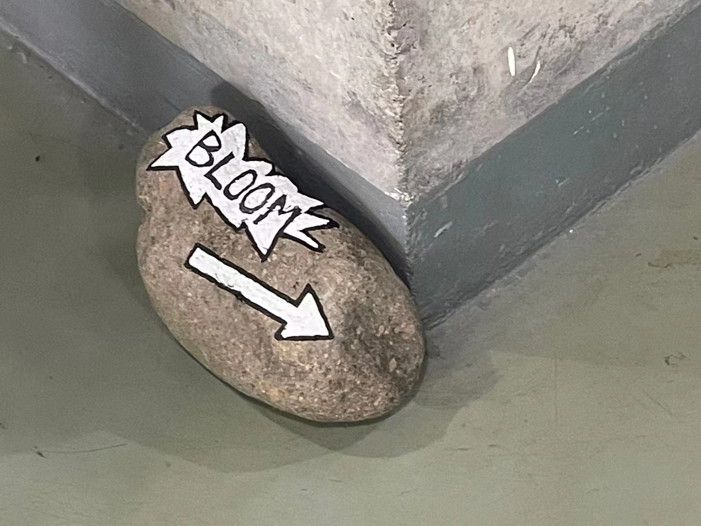
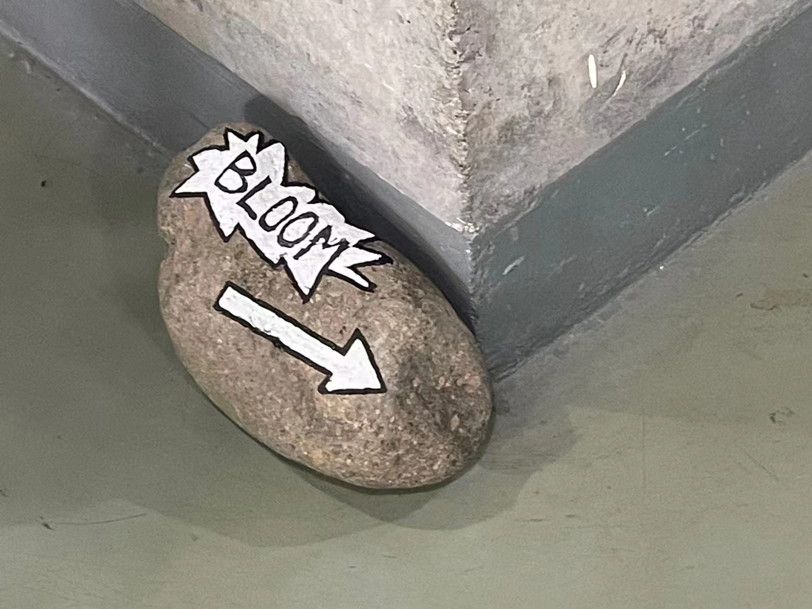

Welcome to Saki Ji's personal website, where you can see a selection of Saki ji's works & personal introduction. Please enjoy browsing this site.

FEVER BLOOM is a futuristic electro music festival curated by four designers and will be held at the Erlitou Summer Capital Museum in Luoyang, Henan Province. The designers have combined the traditional cultural skills of iron flower with electro music, expressing the concept of "preserving the moment of bloom into eternity" to the audience through graphic visuals and AR space, including the "FEVER BLOOM" concept film, FEVER BLOOM electro music festival system materials, iron flower holographic projection experience, and AR ticket display experience. The four different areas of the festival are multi-faceted, explaining the form and meaning of the iron flower from multiple angles. It is one of the national intangible heritages and is a traditional firework in the Yujin region. The designers have fictionalised the festival in Luoyang, Henan Province, the birthplace of the Iron Flower, a folk cultural performance technique discovered by ancient Chinese craftsmen in the process of casting vessels. During the performance, more than ten performers take turns to hit the iron juice, which is more than a thousand degrees hot, onto the shed with their flower sticks, forming iron flowers more than ten metres high in a spectacular scene, presenting a thrilling, festive and lively scene. The name FEVER BLOOM means eternal bloom. The designers wanted to preserve the moment of the blossoming of the iron flower as an eternal memory, and used this as the theme for the main visual of the festival. The centrepiece of the exhibition is a large holographic projection, which continuously cycles through the four different forms of the flower. The four looping animations on the stand link up the dynamic visuals of the entire exhibition, giving a new expression to the traditional beaten iron flower. The concept film "FEVER BLOOM" uses flash clips to show that the blossoming iron flower is the spiritual cluster and flash explosion of the vast fields of Guanzhong, and its tireless drive for life through trials and tribulations. The designers have attempted to bring a strong visual stimulation through the moment of the blossoming of the iron flowers in different media in this exhibition, together with rhythmic electric music, to immerse the audience into a new scene of iron flower playing and bring a sensory experience to the audience.